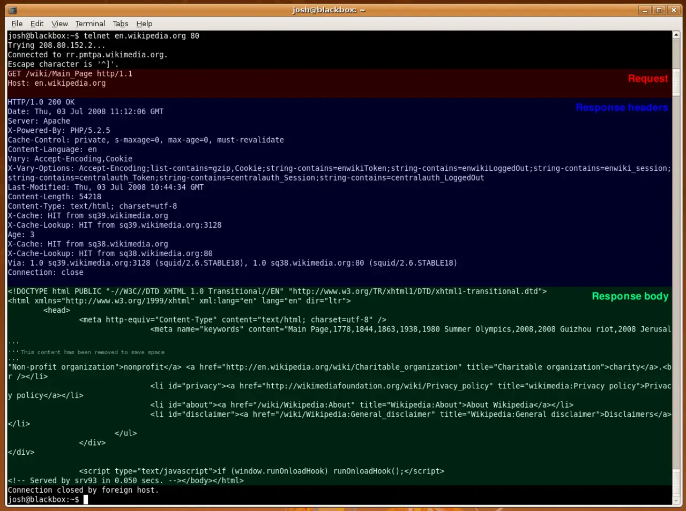

Short answer
A 500 status means the server failed while handling the request, so the client did not receive the document.
Other 5xx codes are the same family: the site, not the client, failed. A crawler that receives 500 may retry later and may also slow down. SEO Health treats a failing template as an outage of discovery for that type. It does not interpret the failure as a content gap. The terminal capture on this page is a successful exchange: the status line says 200. A 500 would occupy that same line. This article does not treat the capture’s date or size notes as a measurement.
Definition
A 503 with a Retry-After header is the polite form when the outage is temporary and you know it. A 500 on a single broken template is a bug, not a maintenance window. Sample the URL twice. If it fails only when a particular parameter is present, record that parameter. Do not hide the failure behind a 200 empty state.
How a crawl meets this rule
Fix the template or dependency that returns 5xx, and confirm a later fetch returns the document.
Intermittent 500s need a sample and a time, not a blended error rate invented for the audit. If only the PDF generator fails, say so, and do not take the HTML product page down with it. Publishing a blog post about reliability does not make the fetch succeed.

What to check
- 5xx on URLs that should be documents
- A second fetch after the fix
- Empty-state bugs not converted into 200 soft errors
- The failing dependency named
- One sample URL and the status
A practical example
/products/valve returns 500 because a related-parts query throws when the list is empty. The HTML template is otherwise fine. The repair handles the empty list and a second fetch returns 200 with the product text. The related-parts block can be absent. The document cannot.
What this does not claim
Recovering from a 500 does not guarantee rankings or citations.
Where Mika Visibility files this
Mika Visibility groups crawlability with SEO Health: robots rules, status codes, and paths a crawler can follow. Broken paths and blocked templates are health findings. Missing topics are not. GEO still depends on pages a crawler can actually reach, but reachability does not write the answer for the buyer.
The capture shows where the status line sits, so a later 500 is not confused with an empty but successful page.
FAQ
What does a 500 mean for a fetch?
A 500 status means the server failed while handling the request, so the client did not receive the document.
What should a later fetch show?
Fix the template or dependency that returns 5xx, and confirm a later fetch returns the document.
Does recovery guarantee rankings?
Recovering from a 500 does not guarantee rankings or citations.
Next step
Run a structured SEO + GEO audit to see health findings, growth gaps, and a blueprint you can act on.
Clearer entities, answers, evidence, and context make pages easier to understand and reference. Results in any answer product are not guaranteed.